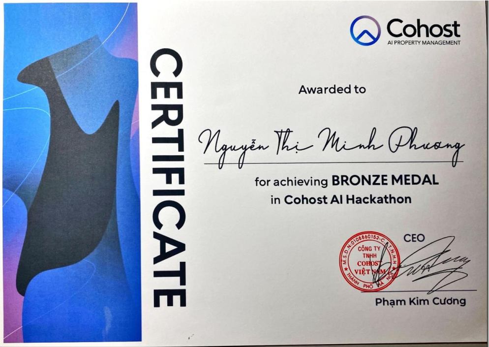
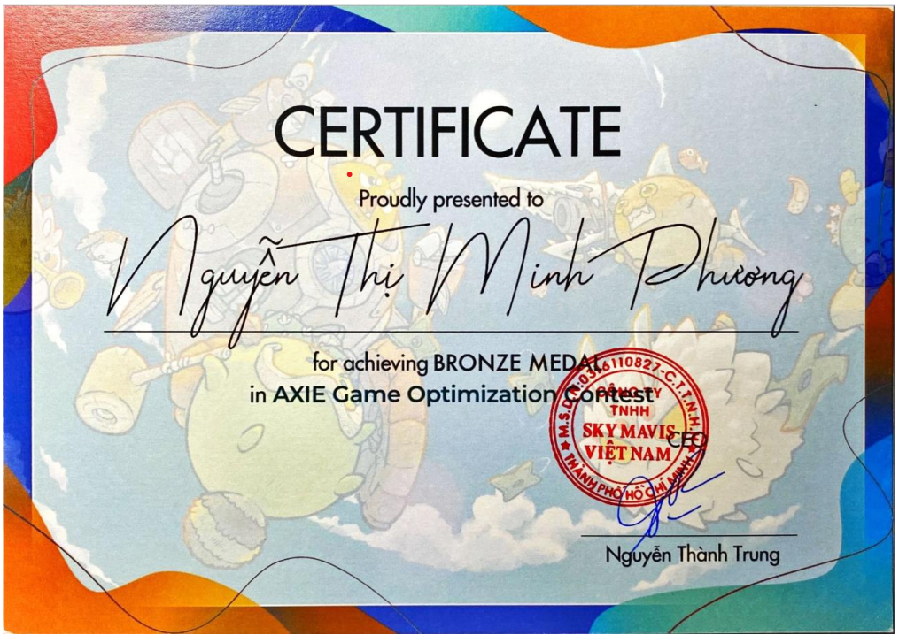

Nguyen Thi Minh Phuong
Email: phuongminh2201hp@gmail.com
Competitive Programming | AI | Cybersecurity
Email: phuongminh2201hp@gmail.com
Competitive Programming | AI | Cybersecurity

[Bronze Medal], [2022]
Developing a computer vision model to classify whether a player executed a ball strike correctly
Built and trained a Convolutional Neural Network (CNN) using PyTorch for image classification
Designed a preprocessing pipeline including frame extraction, normalization, and data augmentation to improve generalization.

[Bronze Medal], [2022]
Developed an automated algorithm for the game 2048
Implemented an Expectimax search algorithm with Q-learning for optimized scoring
Designed and tuned heuristics including tile weighting, monotonicity, smoothness, and empty-tile prioritization
Optimized search depth and performance to maximize long-term score under computational constraints